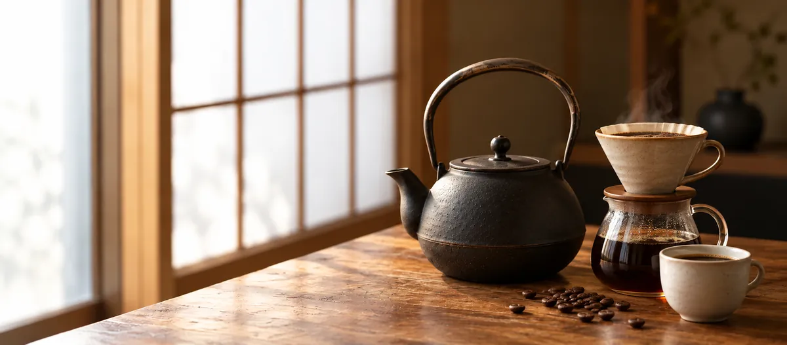
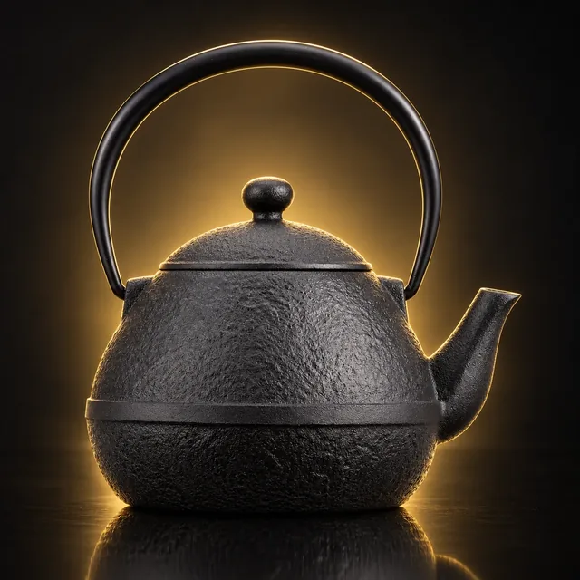
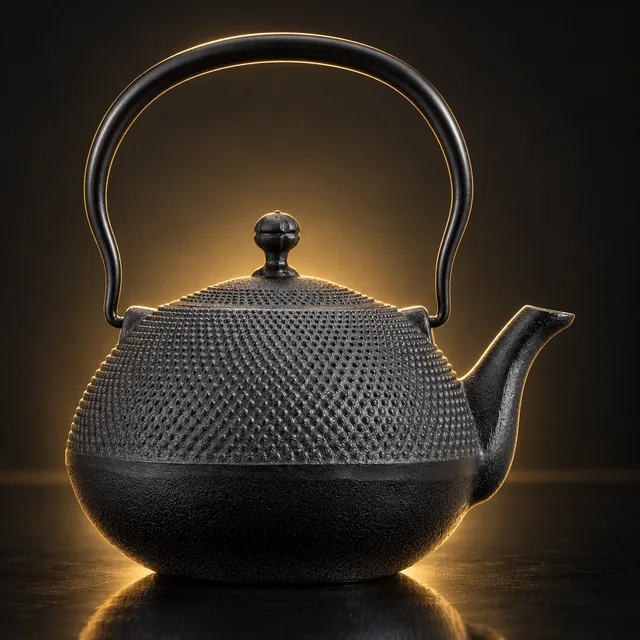
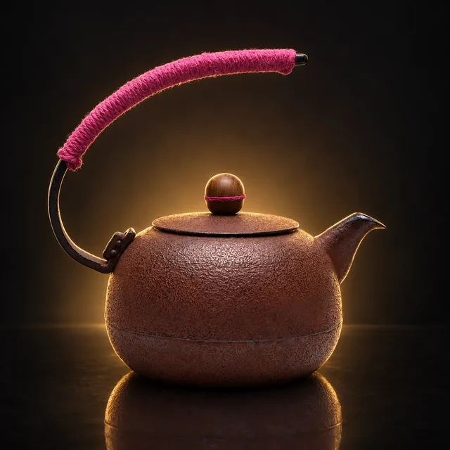
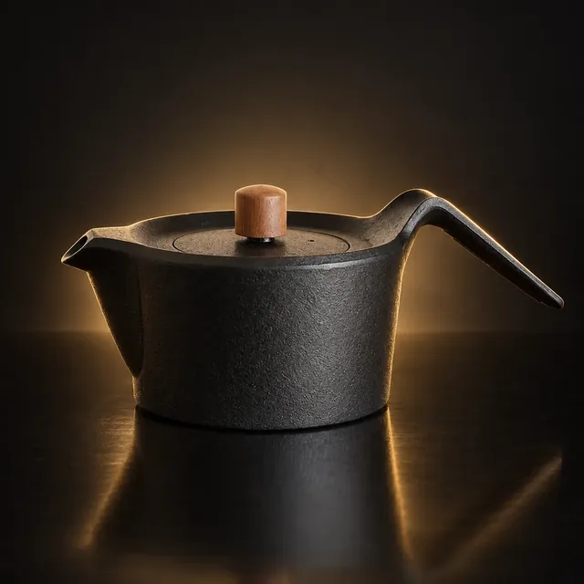
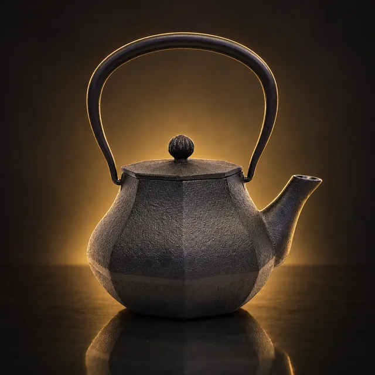
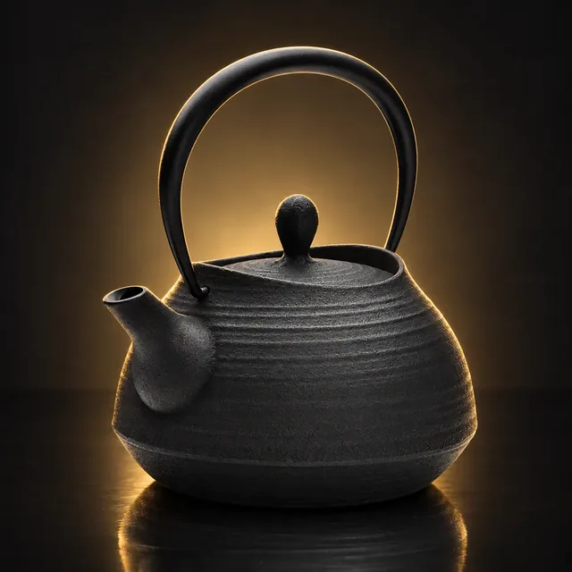
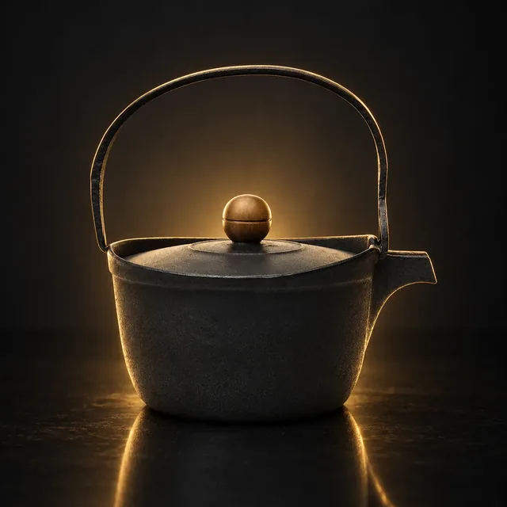
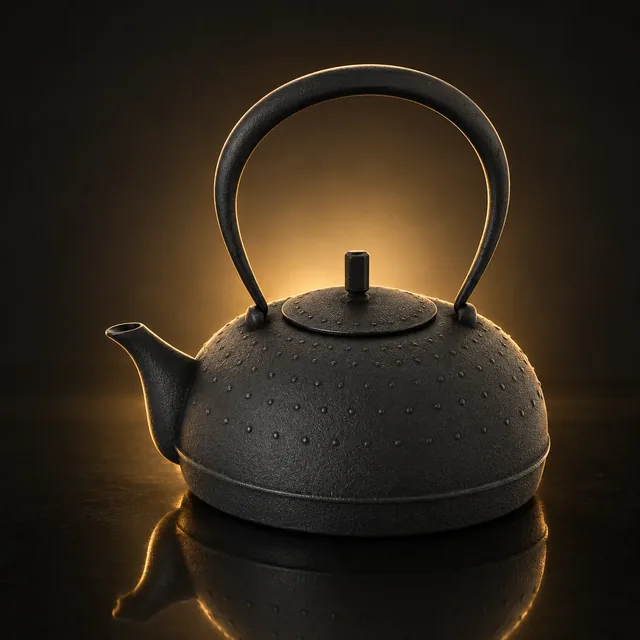
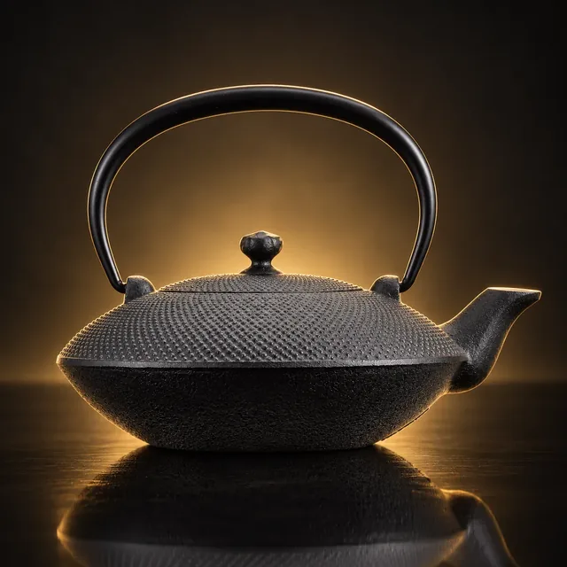

ガイド ／ コーヒー
鉄瓶でコーヒーはおいしくなる？淹れ方とドリップ向きの南部鉄瓶

「鉄瓶で沸かした湯でコーヒーを淹れると、まろやかになる」──よく聞く話ですが、なぜそうなるのか、本当にそうなのかを出典つきで書いている記事はほとんどありません。ここでは工房の公式情報と研究を分けて確かめ、ドリップに向く鉄瓶まで紹介します。
01先に結論
- 味が変わるか──工房は「まろやかになる」「マイルドになると評される」と書いていますが、鉄瓶の湯でコーヒーの味を比べた研究は見つかりませんでした。期待しすぎず、いつもの湯と飲み比べてみるのが正解です
- そのままドリップできるか──注ぎ口が細長い鉄瓶か、コーヒー用に作られた鉄瓶ならできます。注ぎ口が太い鉄瓶は、ドリップポットに湯を移して使います
- 湯の温度──コーヒーの業界団体とメーカーは92〜96℃前後を目安にしています。沸騰した湯を少し落ち着かせてから注ぎます
- 鉄分──コーヒーのポリフェノールは鉄の吸収を妨げる側に働くと考えられています。鉄分補給を目的にするものではありません
02工房は何と言っているか ── 書き方がそれぞれ違う
鉄瓶の湯とコーヒーについて、工房の公式情報を並べると、書き方に濃淡があります。下の表は、味の変化の理由や程度を説明している部分の書き方です（OIGENも別のページでは「まろやか」と言い切っています）。
| 工房 | 書き方 | 書いていること（原文） |
|---|---|---|
| 及源鋳造（OIGEN） | 伝聞（理由の説明） | 「軟水で淹れると苦味成分の抽出が穏やかになり、『マイルドですっきりとした味わい』になると評されます」 |
| 薫山工房 | 言い切り | 「沸かしたお湯は“まろやかさ”が特長で、これにより珈琲の味わいがより爽やかに変化します」 |
| 及富 | 推量 | 「いつもの茶葉や豆でも違った味わいを楽しめるはずです」 |
| 岩鋳 | ── | 味についての記述は見当たらず（コーヒーポットセットの商品説明は「自宅で本格的なドリップコーヒーをお楽しみいただけます」） |
※各工房の公式サイト・公式オンラインショップの記載（2026年10月19日確認）。
OIGENは理由を、鉄瓶の内側にできる湯垢による軟水化で説明しています。軟水だと苦味の成分が出にくく、逆に硬水ではミネラルが「クロロゲン酸などの苦味成分の抽出を促進する」、という説明です。
03研究で分かっていること、分かっていないこと
鉄瓶の湯でコーヒーを比べた研究は見つからない
今回調べた範囲では、鉄瓶で沸かした湯と、ほかの湯でコーヒーの味を比べた査読論文や公的機関の資料は見つかりませんでした。「まろやかになる」は工房の説明と、使った人の感想にとどまります。
水の硬さで、コーヒーの評価は変わる
一方、水そのものの硬さとコーヒーの関係は研究されています。和泉・高屋（日本調理科学会誌、2008年）は、水の種類を変えて淹れたコーヒーの官能評価で「2種類のコーヒーで硬水の総合評価が有意に低くなった」とし、理由を「苦味が強く,酸味が弱いため」と考えられる、としています。全日本コーヒー協会も、コーヒーには軟水が適していると案内しています。
では、鉄瓶で水は軟らかくなるのか
ここが言い切れないところです。南部鉄瓶と外国製鉄瓶で水道水を沸かして比べた平塚ほか（日本食品工学会誌、2004年）は、南部鉄瓶について水質の変化はそれほど認められなかったと報告しています（硬度などが急に上がったのは外国製の鉄瓶で、ある1つは30分の加熱で硬度が19.00mg/Lから53.00mg/Lに）。OIGENは10〜30mg/L程度の硬度低下が見込める可能性があるという実験結果を紹介しつつ、「安定した数値化は難しい」と書いています。
まとめると、「軟水のほうがコーヒーに向く」は研究がある。「鉄瓶なら軟水になる」ははっきりしない。鉄瓶の湯で淹れて味が変わったと感じるかは、いつもの淹れ方と飲み比べて確かめるのがいちばんです。
04鉄分とコーヒー ── 補給にはならない
鉄瓶の湯に溶ける鉄は、実測研究で多くても1Lあたり0.2mg弱とわずかです。しかもコーヒーに含まれるクロロゲン酸などのポリフェノールは鉄と結びつくことが試験管内の実験で確かめられており（Hutachok ほか、2021年）、厚生労働省の食事摂取基準も、タンニンなどは鉄の吸収を抑える側に働くとしています。
つまり、鉄瓶の湯で淹れたコーヒーを鉄分補給として考えるのは筋がよくありません。楽しむのは味と道具のほうです。
05そのままドリップできる鉄瓶の条件
ハンドドリップは、粉の真ん中に細く、ゆっくり湯を落とす淹れ方です。鉄瓶をそのままドリップポットとして使えるかは、注ぎ口で決まります。
① 注ぎ口が細長いこと
OIGENは、なつめ形アラレについて「ちょっと長い注ぎ口と細い穴にこだわりました」「珈琲のペーパー・ドリップにおすすめ」、たまご形について「注ぎ口が細長いためドリップにぴったり」と書いています。一般的な鉄瓶は注ぎ口が短く太いので、湯が一度に出やすくなります。
② コーヒー用に作られた鉄瓶もある
薫山工房は「珈琲ドリップポット」を公式に出しています（A・B・Cの3種、いずれも1.0L）。同社は「専用設計された鉉と注ぎ口の形状により、お湯をゆっくりと狙った場所へ注ぐ」と説明しており、熱源はIH・ガス・炭火に対応しています。
岩鋳には、ドリッパーと茶こしが付いたコーヒーポットセット（満水750ml）があります。ただし内側の仕上げは「内面ホーローなし」で、同社の分類は鉄瓶兼用急須です。手入れは鉄瓶と同じ作法になります。
③ 重さと熱さ
ドリップは数分かけて少しずつ注ぐので、持ち続ける重さが効いてきます。本サイトの掲載データでは0.6L未満の鉄瓶で本体約1.0kg、1L前後で約1.7kgです。ドリップ用に選ぶなら0.5〜0.8L前後の小ぶりが扱いやすいでしょう。直火で沸かすとツル（持ち手）も熱くなるので、布巾や鍋つかみを使ってください。
06注ぎ口が太い鉄瓶なら、ポットに移せばいい
手持ちの鉄瓶の注ぎ口が太くても、あきらめる必要はありません。沸かすのは鉄瓶、注ぐのはドリップポットと分ければ済みます。コーヒー会社のUCCも、やかんで沸かした場合は「細口のドリップポットへお湯を移し替えたらだいたい適温」と案内しています。
鉄瓶にとっても都合のよい使い方です。岩鋳は手入れの案内で「残った湯はそのままにせずポット等へ移す」としており、湯を移して鉄瓶を空にし、余熱で乾かせば錆びにくくなります。
07湯の温度 ── 公式の目安は92〜96℃前後
ハンドドリップの湯温について、コーヒーの業界団体とメーカーの公式の目安を並べます。
- 全日本コーヒー協会──「沸騰後にポットを火から離し、湯面がぐらぐらしているのが静まった程度（95度前後）が適温」
- UCC──92〜96℃
- キーコーヒー──95〜90℃
- HARIO──92〜96℃（同社のおすすめは93℃）
鉄瓶で沸かした場合も考え方は同じで、沸騰したら火を止め、ぐらぐらが静まってから注ぐのが目安です。なおOIGENは、なつめ形・たまご形について「蓋をしたまま沸騰させると注ぎ口から噴き出す場合があり危険です」と注意しています。注ぎ口の細い鉄瓶ほど気をつけてください。
08やってはいけないこと
- 鉄瓶の中でコーヒーを煮出す──コーヒーについての工房の記述はありませんが、OIGENはお茶について、鉄瓶で煮出すと黒く変色する可能性があるためおすすめしていないとし、細かい茶葉や匂いが残るとカビなどの原因になるとも書いています。鉄瓶は湯を沸かす道具として使い、抽出はドリッパーで行うのが安全です
- 湯を入れたまま置く──使い終わったら空にして、蓋を取って余熱で乾かします
- 強火で一気に沸かす──岩鋳は強火は本体にダメージが出る可能性があるとしています。中火以下で
09ドリップに向く南部鉄瓶
工房が「ドリップ向き」「珈琲用」と明記している鉄瓶を、本サイトの掲載データから挙げます。OIGENの2つはIH非対応、薫山の3つはIH対応で、工房の公式オンラインショップで扱われています。
PR ／ アフィリエイトリンクを含みます。

画像はイメージです
画像はイメージです
画像はイメージです※ 価格・容量・熱源は各工房公式で確認した掲載データです。楽天・Yahoo!のボタンは各通販サイトの検索結果が開きます。海外製の類似品も出品されているため、工房名をご確認のうえお求めください。
0.5〜0.8Lの鉄瓶を見る › / 薫山工房の鉄瓶を見る › / 及源鋳造（OIGEN）の鉄瓶を見る ›
10よくある質問
鉄瓶で沸かした湯でコーヒーはおいしくなりますか？
鉄瓶でそのままドリップできますか？
コーヒーに使う湯は何度がよいですか？
鉄瓶の湯で淹れたコーヒーで鉄分補給になりますか？
鉄瓶の中でコーヒーを煮出してもよいですか？
この記事に関連する銘柄
本文で紹介した銘柄のほかに、小ぶりで扱いやすい0.4〜0.6Lの銘柄です。注ぎ口の形は銘柄ごとに違うので、各銘柄のページでご確認ください。価格・容量・熱源は各工房の公式サイトまたは正規取扱店で確認した掲載時点の情報です。おすすめ順ではありません。

画像はイメージです
画像はイメージです
画像はイメージです
画像はイメージです
画像はイメージです
画像はイメージですPR ／ アフィリエイトリンクを含みます。
模様から探す › / 容量から探す › / 熱源から探す › / 予算から探す ›
出典（外部リンク）
本記事が引用した一次ソースのうち、該当ページを特定できたものです。リンク先は別タブで開きます（2026年10月19日に到達を確認）。
- 及源鋳造 OIGEN「鉄瓶内部の白い膜（湯垢）」
- 及源鋳造 OIGEN「Q&A」
- 及源鋳造 OIGEN「鉄瓶 なつめ形アラレ 0.75L」
- 及源鋳造 OIGEN「鉄瓶 たまご形 0.55L」
- 薫山工房「珈琲ドリップポット」
- 及富「南部鉄器の急須・鉄瓶の選び方」
- 岩鋳「コーヒーポットセット」
- 岩鋳「鉄瓶のお手入れ」
- 岩鋳「よくあるご質問」
- 全日本コーヒー協会「基本原則」
- UCC上島珈琲「ペーパードリップでおいしいコーヒーを淹れるには？」
- キーコーヒー「コーヒーは温度で味が変わる？」
- HARIO コーヒーステーション「美味しいハンドドリップコーヒーの入れ方にはコツがある！」
- 和泉眞喜子・高屋むつ子「コーヒーの味に及ぼす抽出条件およびクロロゲン酸量の影響」日本調理科学会誌 41(4) 2008（J-STAGE）
- 平塚広ほか「南部鉄瓶および外国製鉄瓶による水道水の加熱と水質変化」日本食品工学会誌 5(2) 2004（J-STAGE）
- Hutachok ほか「Chemical Analysis, Toxicity Study, and Free-Radical Scavenging and Iron-Binding Assays Involving Coffee (Coffea arabica)」Molecules 26:4169（2021）
- 今野暁子・及川桂子「調理中に鉄鍋から溶出する鉄量の変化」日本調理科学会誌 36(1) 2003（J-STAGE）
- 厚生労働省「日本人の食事摂取基準（2015年版）」鉄（PDF）
出典：及源鋳造 OIGEN（鉄瓶内部の白い膜・Q&A・なつめ形アラレ／たまご形の商品ページ）、薫山工房（珈琲ドリップポット）、及富（南部鉄器の急須・鉄瓶の選び方）、岩鋳（コーヒーポットセット・鉄瓶のお手入れ・よくあるご質問）、全日本コーヒー協会、UCC、キーコーヒー、HARIO の各公式情報（2026年10月19日確認）。和泉・高屋（2008）、平塚ほか（2004）、Hutachok ほか（2021）、今野・及川（2003）、厚生労働省「日本人の食事摂取基準」。重さは本サイト掲載銘柄の集計です。